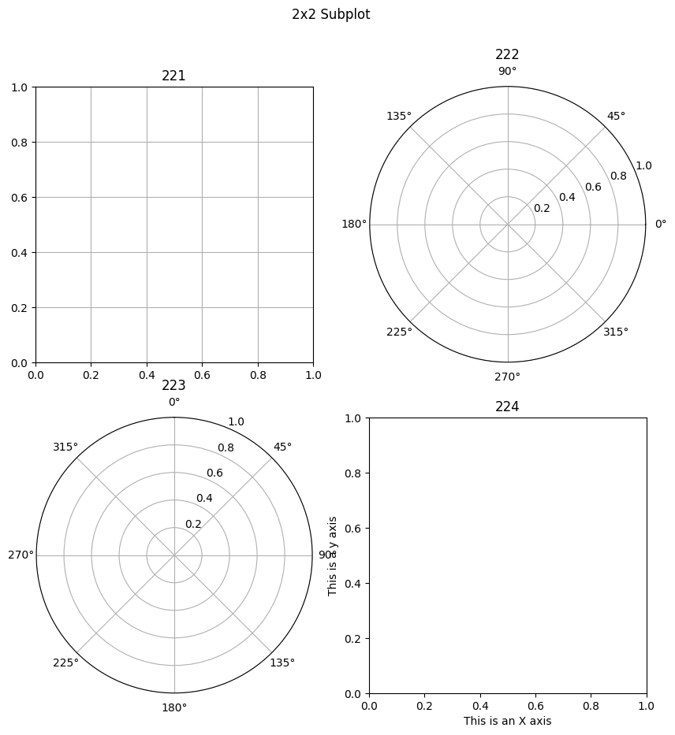
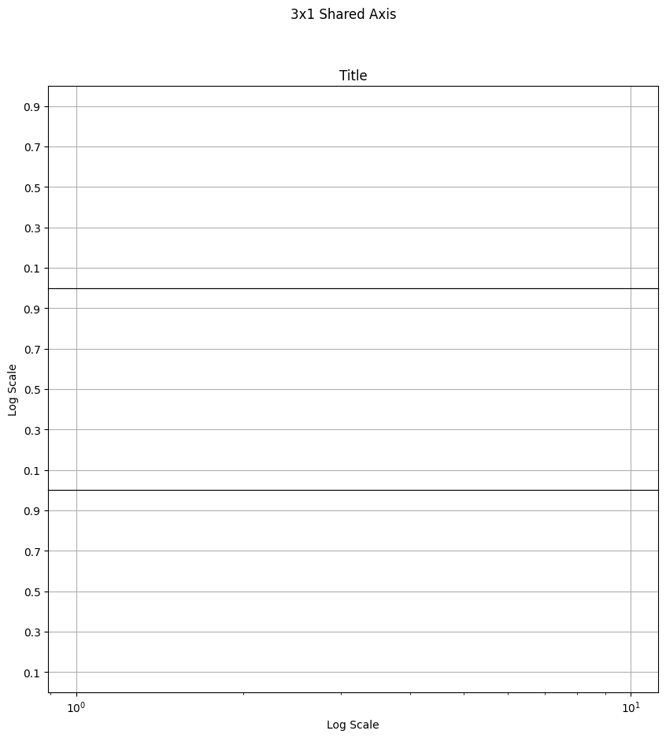

PyPlot.jl gallery
Contents
PyPlot.jl gallery#
Source: the gist by gizmaa.
3D surface plot#
import PyPlot as plt
## Data
us = range(0.0,stop=2pi,length=300)
vs = range(0.0,stop=pi,length=300)
x = [cos(u) * sin(v) for u in us, v in vs]
y = [sin(u) * sin(v) for u in us, v in vs]
z = [cos(v) for u in us, v in vs]
colors = rand(length(us),length(vs),3)
## Plot
plt.surf(x,y,z,facecolors=colors)
plt.gcf();
Annotations#
using Dates, LaTeXStrings
import PyPlot as plt
## Data
## Generate an hour of data at 10Hz.
x = collect(DateTime(2013,10,4):Dates.Millisecond(100):DateTime(2013,10,4,1)) # Generate time array
x = Dates.value.(x)/1000/60/60/24 # Convert time from milliseconds from day 0 to days from day 0
y = sin.(2*pi*collect(0:2*pi/(length(x)+1):2*pi-(2*pi/length(x))))
dx = maximum(x) - minimum(x)
dy = maximum(y) - minimum(y)
y2 = 10rand(21) .- 3
x2 = collect(minimum(x):dx/20:maximum(x))
x3 = collect(minimum(x):dx/20:maximum(x))
y3 = 10rand(21) .- 3
21-element Vector{Float64}:
5.295616897569216
6.819346459436209
-1.6881001634258248
-0.5938817486210985
3.607516686787614
-2.0378586968489016
1.985525064287608
-1.3530901141530323
-0.7322830963813747
0.34517356138756305
0.34241968455529204
3.5569176841541124
-1.4691460172356903
-0.18493183258689516
-1.5505785209078655
5.4534645698304285
3.120768873624219
2.624531907463222
-1.6770049944924355
3.7911742672258733
2.3480435185543884
fig, ax = plt.subplots(figsize=(10, 10))
ax.plot_date(x,y, linestyle="-", marker="None", label="Test Plot") # Plot a basic line
ax.axis("tight") # Fit the axis tightly to the plot
ax.set_title("U Component of Wind")
ax.grid("on")
ax.legend(loc="upper right",fancybox="true")
##################
# Text Styling #
##################
font1 = Dict("family"=>"serif",
"color"=>"darkred",
"weight"=>"normal",
"size"=>16)
ax.set_xlabel("Time", fontdict=font1) # X Axis font formatting
ax.set_ylabel("Velocity (m/s)")
plt.setp(ax.get_yticklabels(),fontsize=24,color="blue") # Y Axis font formatting
#################
# Arrow Tests #
#################
# This arrows orient toward the x-axis, the more horizontal they are the more skewed they look
ax.arrow(x[convert(Int64,floor(length(x)/2))],
0.4,
0.0009,
0.4,
head_width=0.001,
width=0.00015,
head_length=0.07,
overhang=0.5,
head_starts_at_zero="true",
facecolor="red")
ax.arrow(x[convert(Int64,floor(0.3length(x)))]-0.25dx,
y[convert(Int64,floor(0.3length(y)))]+0.25dy,
0.25dx,
-0.25dy,
head_width=0.001,
width=0.00015,
head_length=0.07,
overhang=0.5,
head_starts_at_zero="true",
facecolor="red",
length_includes_head="true")
###########################
# Text Annotation Tests #
###########################
ax.annotate("Look, data!",
xy=[x[convert(Int64,floor(length(x)/4.1))];y[convert(Int64,floor(length(y)/4.1))]],
xytext=[x[convert(Int64,floor(length(x)/4.1))]+0.1dx;y[convert(Int64,floor(length(y)/4.1))]+0.1dy],
xycoords="data",
arrowprops=Dict("facecolor"=>"black")) # Julia dictionary objects are automatically converted to Python object when they pass into a PyPlot function
ax.annotate("Figure Top Right",
xy=[1;1],
xycoords="figure fraction",
xytext=[0,0],
textcoords="offset points",
ha="right",
va="top")
ax.annotate(L"$\int x = \frac{x^2}{2} + C$",
xy=[1;0],
xycoords="axes fraction",
xytext=[-10,10],
textcoords="offset points",
fontsize=30.0,
ha="right",
va="bottom")
fig.autofmt_xdate(bottom=0.2,rotation=30,ha="right")
sys:1: UserWarning: marker is redundantly defined by the 'marker' keyword argument and the fmt string "o" (-> marker='o'). The keyword argument will take precedence.
Axis placement#
import PyPlot as plt
# Data
x = 0:pi/50:2pi
y = sin.(x)
100-element Vector{Float64}:
0.0
0.06279051952931337
0.12533323356430426
0.18738131458572463
0.2486898871648548
0.3090169943749474
0.368124552684678
0.4257792915650727
0.4817536741017153
0.5358267949789967
0.5877852522924731
0.6374239897486897
0.6845471059286887
⋮
-0.6845471059286883
-0.6374239897486896
-0.5877852522924726
-0.5358267949789963
-0.4817536741017153
-0.4257792915650722
-0.36812455268467786
-0.3090169943749468
-0.2486898871648545
-0.18738131458572468
-0.1253332335643038
-0.06279051952931326
fig, axs = plt.subplots(2, 1, figsize = (10, 10))
ax = axs[1]
ax.plot(x,y)
ax.axis("tight")
ax.spines["top"].set_visible(false) # Hide the top edge of the axis
ax.spines["right"].set_visible(false) # Hide the right edge of the axis
ax.spines["left"].set_position("center") # Move the right axis to the center
ax.spines["bottom"].set_position("center") # Most the bottom axis to the center
ax.xaxis.set_ticks_position("bottom") # Set the x-ticks to only the bottom
ax.yaxis.set_ticks_position("left") # Set the y-ticks to only the left
ax = axs[2]
ax.plot(x,y)
ax.axis("tight")
ax.spines["top"].set_visible(false) # Hide the top edge of the axis
ax.spines["right"].set_visible(false) # Hide the right edge of the axis
ax.xaxis.set_ticks_position("bottom")
ax.yaxis.set_ticks_position("left")
ax.spines["left"].set_position(("axes",-0.03)) # Offset the left scale from the axis
ax.spines["bottom"].set_position(("axes",-0.05)) # Offset the bottom scale from the axis
ax.set_xlabel("X Axis")
ax.set_ylabel("Y Axis")
fig;
Bar plot#
import PyPlot as plt
# Data
x = [1:1:50;]
y = 100*rand(50)
# Plot
fig, axs = plt.subplots(2, 1, figsize=(10,10))
ax = axs[1]
ax.bar(x,y,color="#0f87bf",align="center",alpha=0.4)
ax.axis("tight")
ax.grid("on")
ax.set_title("Vertical Bar Plot")
ax.set_xlabel("X")
ax.set_ylabel("Y")
ax = axs[2]
ax.barh(x,y,color="#0f87bf",align="center",alpha=0.4)
ax.axis("tight")
ax.set_title("Horizontal Bar Plot")
ax.grid("on")
ax.set_xlabel("X")
ax.set_ylabel("Y")
fig.suptitle("Bar Plot Examples")
PyObject Text(0.5, 0.98, 'Bar Plot Examples')
Broken axis subplots#
using PyCall
import PyPlot as plt
axes_grid1 = pyimport("mpl_toolkits.axes_grid1")
PyObject <module 'mpl_toolkits.axes_grid1' from '/usr/local/lib/python3.10/site-packages/mpl_toolkits/axes_grid1/__init__.py'>
x = rand(100)
y = rand(100)
y2 = rand(100).+10
fig, axes = plt.subplots(2, 1, figsize=(10,10), sharex=true)
ax = axes[1]
divider = axes_grid1.make_axes_locatable(ax)
ax2 = divider.new_vertical(size="100%", pad=0.1)
fig.add_axes(ax2)
# Lower Portion of First Plot
ax.scatter(x, y)
ax.set_ylim(0, 1)
ax.spines["top"].set_visible(false)
# Upper Portion of First Plot
ax2.scatter(x, y2)
ax2.set_ylim(10, 11)
ax2.tick_params(bottom="off", labelbottom="off")
ax2.spines["bottom"].set_visible(false)
###############################
## Add Line Break Markings ##
###############################
# From https://matplotlib.org/examples/pylab_examples/broken_axis.html
# Upper Line Break Markings
d = 0.015 # how big to make the diagonal lines in axes coordinates
ax2.plot((-d, +d), (-d, +d), transform=ax2.transAxes, color="k", clip_on=false,linewidth=0.8) # Left diagonal
ax2.plot((1 - d, 1 + d), (-d, +d), transform=ax2.transAxes, color="k", clip_on=false,linewidth=0.8) # Right diagonal
# Lower Line Break Markings
ax.plot((-d, +d), (1 - d, 1 + d), transform=ax.transAxes, color="k", clip_on=false,linewidth=0.8) # Left diagonal
ax.plot((1 - d, 1 + d), (1 - d, 1 + d), transform=ax.transAxes, color="k", clip_on=false,linewidth=0.8) # Right diagonal
###################
## Second Plot ##
###################
axes[2].scatter(x, y)
fig;
Custom Time#
using Dates, PyCall
import PyPlot as plt
matplotlib = pyimport("matplotlib")
PyObject <module 'matplotlib' from '/usr/local/lib/python3.10/site-packages/matplotlib/__init__.py'>
## Data
dt = Dates.Hour(1)
time = collect(DateTime(2014,11,20):dt:DateTime(2014,11,22))
y = 10rand(length(time))
dfmt = Dates.DateFormat("yyyy-mm-dd HH:MM:SS")
font1 = Dict("fontname"=>"Sans","style"=>"normal")
# Convert time from milliseconds from day 0 to days from day 0
time2 = Dates.value.(time)/1000/60/60/24
timespan = "\n" * Dates.format(minimum(time),dfmt) * " - " * Dates.format(maximum(time),dfmt)
majorformatter = matplotlib.dates.DateFormatter("%d.%m.%Y")
minorformatter = matplotlib.dates.DateFormatter("%H:%M")
majorlocator = matplotlib.dates.DayLocator(interval=1)
minorlocator = matplotlib.dates.HourLocator(byhour=(8, 16))
## Plot
fig, ax = plt.subplots(figsize=(10, 10))
ax.plot_date(time2,y,linestyle="-",marker="None",label="test")
ax.axis("tight")
ax.set_title("Random Data Against Time\n" * timespan)
ax.grid("on")
ax.set_xlabel("Time")
ax.set_ylabel("Stuff",fontdict=font1)
ax.xaxis.set_major_formatter(majorformatter)
ax.xaxis.set_minor_formatter(minorformatter)
ax.xaxis.set_major_locator(majorlocator)
ax.xaxis.set_minor_locator(minorlocator)
fig.autofmt_xdate(bottom=0.2,rotation=30,ha="right")
plt.tight_layout()
sys:1: UserWarning: marker is redundantly defined by the 'marker' keyword argument and the fmt string "o" (-> marker='o'). The keyword argument will take precedence.
Error bar#
using Dates
import PyPlot as plt
# Data
x = collect(DateTime(2013,10,4):Dates.Day(1):DateTime(2013,10,9))
y = [0.9;0.75;0.5;0.4;0.35;0.3]
uppererror = [0.05 0.05 0.05 0.03 0.15 0.05;]
lowererror = [0.15 0.2 0.05 0.1 0.05 0.05;]
errs = [lowererror;uppererror]
fig, ax = plt.subplots(figsize=(10,10))
ax.plot_date(x,y,linestyle="-",label="Base Plot") # Basic line plot
ax.errorbar(x,y,yerr=errs,fmt="o") # Plot irregular error bars
ax.axis("tight")
ax.set_title("Error Bar Example")
ax.set_xlabel("Time")
ax.set_ylabel("Some Data")
ax.grid("on")
fig.autofmt_xdate(bottom=0.2,rotation=30,ha="right") # Autoformat the time format and rotate the labels so they don't overlap
fig;
Histogram#
import PyPlot as plt
x = randn(1000) # Values
nbins = 50 # Number of bins
fig, ax = plt.subplots(figsize=(10,10))
ax.hist(x,nbins) # Histogram
ax.grid("on")
ax.set_xlabel("X")
ax.set_ylabel("Y")
ax.set_title("Histogram")
fig;
Line collections#
using PyCall
import PyPlot as plt
matplotlib = pyimport("matplotlib")
PyObject <module 'matplotlib' from '/usr/local/lib/python3.10/site-packages/matplotlib/__init__.py'>
lines = Any[collect(zip([1.,3.,5.,0.],[2.,4.,.06,0.]))]
push!(lines,collect(zip([3.,4],[5.,6])))
push!(lines,collect(zip([8.,2],[2.,4])))
##############
## Colors ##
##############
# Line segments will be plotted with the following order of colors and will
# cycle back to the beginning of the array when it has gone through all of them
c = Vector[[1,0,0],[0,1,0],[0,0,1]]
# Assemble everything into a LineCollection
line_segments = matplotlib.collections.LineCollection(lines,colors=c)
fig, ax = plt.subplots(figsize=(10,10))
ax.add_collection(line_segments)
ax.axis("image") # Tight axis and 1:1 aspect ratio
fig;
Major and minor ticks#
using PyCall
import PyPlot as plt
matplotlib = pyimport("matplotlib")
PyObject <module 'matplotlib' from '/usr/local/lib/python3.10/site-packages/matplotlib/__init__.py'>
x = collect(0.0:0.01:100.0)
y = @. sin(0.1pi*x) * exp(-0.01x)
fig, ax = plt.subplots(figsize=(10,10))
ax.plot(x,y)
ax.set_xlabel("X Axis")
ax.set_ylabel("Y Axis")
ax.grid("on")
ax.set_title("Major and Minor Ticks")
###########################
# Set the tick interval #
###########################
Mx = matplotlib.ticker.MultipleLocator(20) # Define interval of major ticks
f = matplotlib.ticker.FormatStrFormatter("%1.2f") # Define format of tick labels
ax.xaxis.set_major_locator(Mx) # Set interval of major ticks
ax.xaxis.set_major_formatter(f) # Set format of tick labels
mx = matplotlib.ticker.MultipleLocator(5) # Define interval of minor ticks
ax.xaxis.set_minor_locator(mx) # Set interval of minor ticks
My = matplotlib.ticker.MultipleLocator(0.5) # Define interval of major ticks
ax.yaxis.set_major_locator(My) # Set interval of major ticks
my = matplotlib.ticker.MultipleLocator(0.1) # Define interval of minor ticks
ax.yaxis.set_minor_locator(my) # Set interval of minor ticks
ax.xaxis.set_tick_params(which="major",length=10,width=2,labelsize=16)
ax.xaxis.set_tick_params(which="minor",length=5,width=2)
fig;
Multiple axis#
ax2 = ax.twinx()
using Random
import PyPlot as plt
Random.seed!(2021)
TaskLocalRNG()
n = 15 # Number of values
x = collect(1:n)
y1 = 10rand(n,1) .- 2
y2 = 1000rand(n,1)
y3 = 30rand(n,1) .- 15
fig, ax = plt.subplots(figsize=(10,10))
ax.plot(x,y1,linestyle="-",marker="o",label="First") # Plot a basic line
ax.set_title("Multi-axis Plot")
ax.set_xlabel("X Axis")
font1 = Dict("color"=>"blue")
ax.set_ylabel("Left Axis",fontdict=font1)
plt.setp(ax.get_yticklabels(),color="blue") # Y Axis font formatting
################
# Other Axes #
################
new_position = [0.06;0.06;0.77;0.91] # Position Method 2
ax.set_position(new_position) # Position Method 2: Change the size and position of the axis
#fig.subplots_adjust(right=0.85) # Position Method 1
ax2 = ax.twinx() # Create another axis on top of the current axis
font2 = Dict("color"=>"purple")
ax2.set_ylabel("Right Axis",fontdict=font2)
ax2.plot(x,y2,color="purple",linestyle="-",marker="o",label="Second") # Plot a basic line
ax2.set_position(new_position) # Position Method 2
plt.setp(ax2.get_yticklabels(),color="purple") # Y Axis font formatting
ax3 = ax.twinx() # Create another axis on top of the current axis
ax3.spines["right"].set_position(("axes",1.12)) # Offset the y-axis label from the axis itself so it doesn't overlap the second axis
font3 = Dict("color"=>"green")
ax3.set_ylabel("Far Right Axis",fontdict=font3)
ax3.plot(x,y3,color="green",linestyle="-",marker="o",label="Third") # Plot a basic line
ax3.set_position(new_position) # Position Method 2
plt.setp(ax.get_yticklabels(),color="green") # Y Axis font formatting
ax.axis("tight")
# Enable just the right part of the frame
ax3.set_frame_on(true) # Make the entire frame visible
ax3.patch.set_visible(false) # Make the patch (background) invisible so it doesn't cover up the other axes' plots
ax3.spines["top"].set_visible(false) # Hide the top edge of the axis
ax3.spines["bottom"].set_visible(false) # Hide the bottom edge of the axis
fig;
Pie Chart#
import PyPlot as plt
labels = ["Lager","Pilsner","Stout","IPA"]
colors = ["yellowgreen","gold","lightskyblue","lightcoral"]
explode = zeros(length(labels))
explode[2] = 0.1 # Move slice 2 out by 0.1
sizes = [15, 30, 45, 10]
font = Dict("fontname"=>"Sans","weight"=>"semibold")
fig, ax = plt.subplots(figsize=(10,10))
ax.pie(sizes,
labels=labels,
shadow=true,
startangle=90,
explode=explode,
colors=colors,
autopct="%1.1f%%",
textprops=font)
ax.axis("equal")
ax.set_title("Beer")
fig;
Quiver plots#
import PyPlot as plt
R = -10:1:9
X = [R;]'
Y = [R;]
U = repeat([R;]',length(X))
V = repeat([R;],1,length(Y))
fig, ax = plt.subplots(figsize=(10,10))
q = ax.quiver(X,Y,U,V)
ax.quiverkey(q,X=0.07,Y = 0.05, U = 10,coordinates="figure", label="Quiver key, length = 10",labelpos = "E")
ax.set_title("Quiver Plot Example")
fig;
Scatter Plot#
using Random
import PyPlot as plt
Random.seed!(2021)
TaskLocalRNG()
x = 100*rand(50)
y = 100*rand(50)
areas = 800*rand(50)
fig, ax = plt.subplots(figsize=(10,10))
ax.scatter(x,y,s=areas,alpha=0.5)
ax.set_title("Scatter Plot")
ax.set_xlabel("X")
ax.set_ylabel("Y")
ax.grid("on")
fig;
Subplots#
import PyPlot as plt
fig = plt.figure("pyplot_subplot_mixed",figsize=(10,10)) # Create a new blank figure
#fig.set_figheight(7) # Doesn't work
#fig.set_figwidth(3) # Doesn't work
plt.subplot(221) # Create the 1st axis of a 2x2 arrax of axes
plt.grid("on") # Create a grid on the axis
plt.title("221") # Give the most recent axis a title
plt.subplot(222,polar="true") # Create a plot and make it a polar plot, 2nd axis of 2x2 axis grid
plt.title("222")
ax = plt.subplot(223,polar="true") # Create a plot and make it a polar plot, 3rd axis of 2x2 axis grid
ax.set_theta_zero_location("N") # Set 0 degrees to the top of the plot
ax.set_theta_direction(-1) # Switch the polar plot to clockwise
plt.title("223")
plt.subplot(224) # Create the 4th axis of a 2x2 arrax of axes
plt.xlabel("This is an X axis")
plt.ylabel("This is a y axis")
plt.title("224")
fig.suptitle("2x2 Subplot")
fig;

###################
## Column Plot ##
###################
fig = plt.figure("pyplot_subplot_column",figsize=(10,10))
plt.subplot(311) # Create the 1st axis of a 3x1 array of axes
plt.title("311")
plt.subplot(312) # Create the 2nd axis of a 3x1 arrax of axes
ax = plt.gca() # Get the handle of the current axis
ax.set_yscale("log") # Set the y axis to a logarithmic scale
plt.grid("on")
plt.ylabel("Log Scale")
plt.title("312")
plt.subplot(313) # Create the 3rd axis of a 3x1 array of axes
ax = plt.gca()
ax.set_xscale("log") # Set the x axis to a logarithmic scale
plt.xlabel("Log Scale")
plt.title("313")
fig.suptitle("3x1 Subplot")
fig;

###################
## Shared Axis ##
###################
fig = plt.figure("pyplot_subplot_touching",figsize=(10,10))
plt.subplots_adjust(hspace=0.0) # Set the vertical spacing between axes
plt.subplot(311) # Create the 1st axis of a 3x1 array of axes
ax1 = plt.gca()
ax1.set_xscale("log") # Set the x axis to a logarithmic scale
plt.setp(ax1.get_xticklabels(),visible=false) # Disable x tick labels
plt.grid("on")
plt.title("Title")
plt.yticks(0.1:0.2:0.9) # Set the y-tick range and step size, 0.1 to 0.9 in increments of 0.2
plt.ylim(0.0,1.0) # Set the y-limits from 0.0 to 1.0
plt.subplot(312,sharex=ax1) # Create the 2nd axis of a 3x1 array of axes
ax2 = plt.gca()
ax2.set_xscale("log") # Set the x axis to a logarithmic scale
plt.setp(ax2.get_xticklabels(),visible=false) # Disable x tick labels
plt.grid("on")
plt.ylabel("Log Scale")
plt.yticks(0.1:0.2:0.9)
plt.ylim(0.0,1.0)
plt.subplot(313,sharex=ax2) # Create the 3rd axis of a 3x1 array of axes
ax3 = plt.gca()
ax3.set_xscale("log") # Set the x axis to a logarithmic scale
plt.grid("on")
plt.xlabel("Log Scale")
plt.yticks(0.1:0.2:0.9)
plt.ylim(0.0,1.0)
plt.suptitle("3x1 Shared Axis")
fig;

Surface plot#
using Distributions, LinearAlgebra
import PyPlot as plt
plt.using3D() # Needed to create a 3D subplot
n = 100
x = range(-3,stop=3,length=n)
y = range(-3,stop=3,length=n)
xgrid = repeat(x',n,1)
ygrid = repeat(y,1,n)
z = zeros(n,n)
for i in 1:n
for j in 1:n
z[i:i,j:j] .= pdf(MvNormal(Matrix(1.0I,2,2)),[x[i];y[j]])
end
end
fig = plt.figure("pyplot_surfaceplot",figsize=(10,10))
ax = fig.add_subplot(2,1,1,projection="3d")
ax.plot_surface(xgrid, ygrid, z, rstride=2,edgecolors="k", cstride=2, cmap=plt.ColorMap("gray"), alpha=0.8, linewidth=0.25)
ax.set_xlabel("X")
ax.set_ylabel("Y")
ax.set_title("Surface Plot")
ax = fig.add_subplot(2,1,2)
cp = ax.contour(xgrid, ygrid, z, colors="black", linewidth=2.0)
ax.clabel(cp, inline=1, fontsize=10)
ax.set_xlabel("X")
ax.set_ylabel("Y")
ax.set_title("Contour Plot")
fig.tight_layout()
fig;
sys:1: UserWarning: The following kwargs were not used by contour: 'linewidth'
Windrose bar and line plots#
A.k.a polar plots
import PyPlot as plt
theta = collect(0:2pi/30:2pi)
r = rand(length(theta))
width = 2pi/length(theta)
0.2026833970057931
##########################
## Windrose Line Plot ##
##########################
fig = plt.figure(figsize=(10,10)) # Create a new figure
ax = plt.axes(polar="true") # Create a polar axis
ax.set_title("Wind Rose - Line")
ax.plot(theta,r,linestyle="-",marker="None") # Basic line plot
dtheta = 10
ax.set_thetagrids(collect(0:dtheta:360-dtheta)) # Show grid lines from 0 to 360 in increments of dtheta
ax.set_theta_zero_location("N") # Set 0 degrees to the top of the plot
ax.set_theta_direction(-1) # Switch to clockwise
fig;
fig = plt.figure("pyplot_windrose_barplot",figsize=(10,10)) # Create a new figure
ax = plt.axes(polar="true") # Create a polar axis
ax.set_title("Wind Rose - Bar")
ax.bar(theta,r,width=width) # Bar plot
dtheta = 10
ax.set_thetagrids(collect(0:dtheta:360-dtheta)) # Show grid lines from 0 to 360 in increments of dtheta
ax.set_theta_zero_location("N") # Set 0 degrees to the top of the plot
ax.set_theta_direction(-1) # Switch to clockwise
fig;
XKCD style inexact plots#
import PyPlot as plt
plt.xkcd()
PyObject <matplotlib.pyplot._xkcd object at 0x7fc7fdaf5ae0>
x = [1:1:100;]
y = ones(100)
for i=70:1:100
y[i] = y[i] - (0.7/30)*(i-70)
end
fig, ax = plt.subplots(figsize=(10,10))
ax.plot(x,y)
ax.set_ylim([0.2;1.1])
ax.annotate("THE DAY I REALIZED\nI COULD COOK BACON\nWHENEVER I WANTED",xy=[70;1],arrowprops=Dict("arrowstyle"=>"->"),xytext=[25;0.8])
ax.set_xticks([])
ax.set_yticks([])
ax.set_xlabel("TIME")
ax.set_ylabel("MY OVERALL HEALTH")
ax.set_title("Stove Owndership\nhttp://xkcd.com/418/")
ax.spines["top"].set_color("none") # Remove the top axis boundary
ax.spines["right"].set_color("none") # Remove the right axis boundary
fig;
findfont: Font family ['xkcd', 'xkcd Script', 'Humor Sans', 'Comic Neue', 'Comic Sans MS'] not found. Falling back to DejaVu Sans.
findfont: Font family ['xkcd', 'xkcd Script', 'Humor Sans', 'Comic Neue', 'Comic Sans MS'] not found. Falling back to DejaVu Sans.
# Return to the regular style
plt.rcdefaults()
Animation#
using Base64
using PyPlot
using PyCall
@pyimport matplotlib.animation as anim
# Embbed mp4 files in Jupyter Notebook
function display_mp4(filename)
display("text/html", string("""<video autoplay controls><source src="data:video/x-m4v;base64,""",
Base64.base64encode(open(read, filename)),"""" type="video/mp4"></video>"""))
end
WARNING: using PyPlot.matplotlib in module Main conflicts with an existing identifier.
WARNING: using PyPlot.colors in module Main conflicts with an existing identifier.
WARNING: using PyPlot.plt in module Main conflicts with an existing identifier.
display_mp4 (generic function with 1 method)
A = randn(20, 20, 20)
fig = figure(figsize=(2,2))
function make_frame(i)
imshow(A[:,:,i+1], interpolation="none")
end
withfig(fig) do
myanim = anim.FuncAnimation(fig, make_frame, frames=size(A, 3), interval=20)
myanim.save("test2.mp4", bitrate=-1, extra_args=["-vcodec", "libx264", "-pix_fmt", "yuv420p"])
end
display_mp4("test2.mp4")